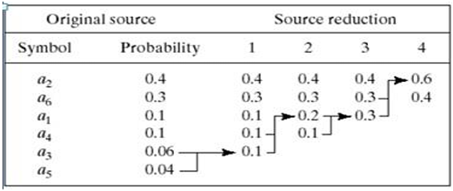
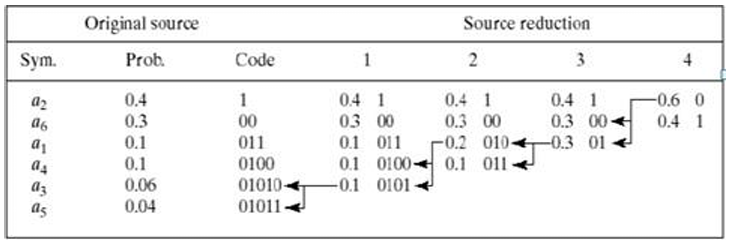
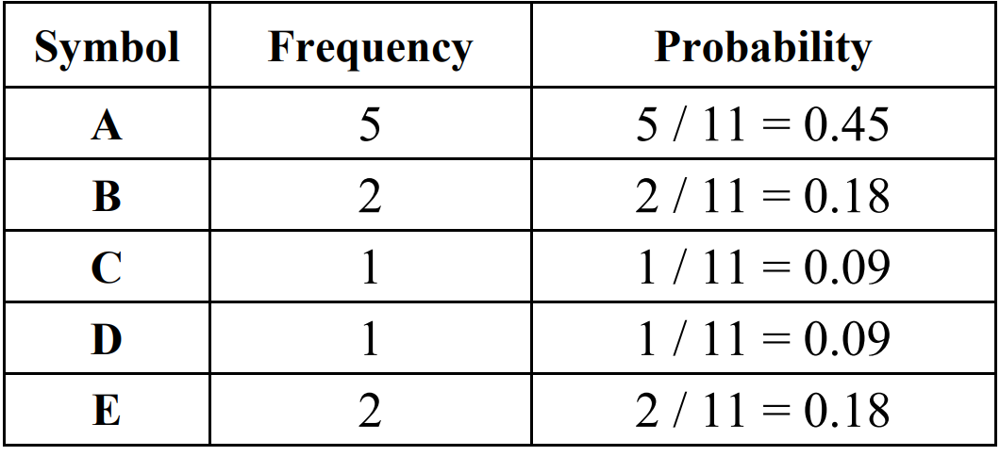
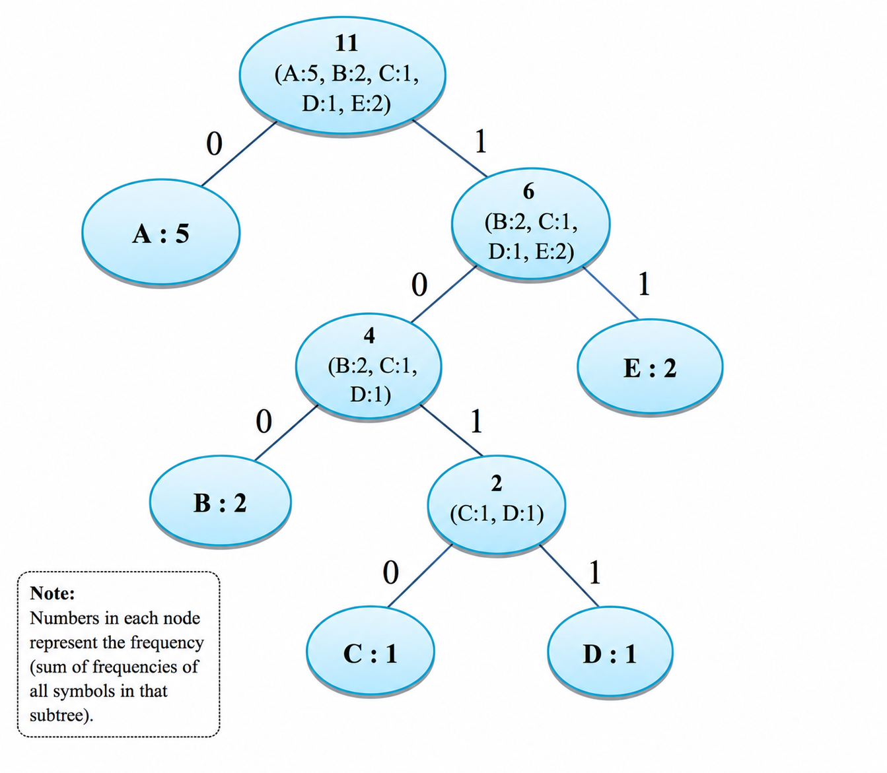
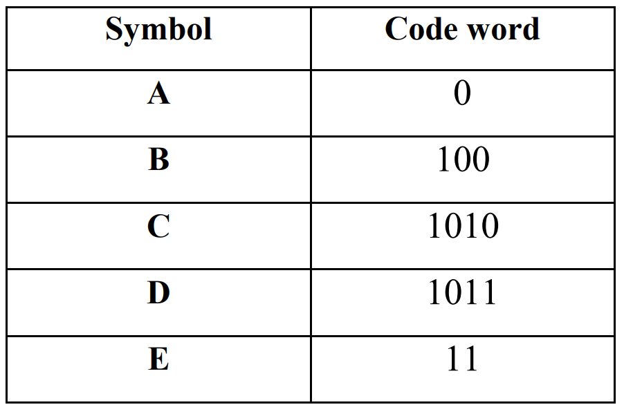

Introduction
Image compression is defined as the process of reducing the amount of data needed to represent a digital image. This is done by removing the redundant data. The objective of image compression is to decrease the number of bits required to store and transmit without any measurable loss of information.
Based on the reconstruction quality, image compression techniques are broadly classified into two categories:
1. Lossless Compression: Lossless compression reconstructs the original image exactly after decompression, ensuring that no information is lost during the compression process. It is suitable for applications where perfect reconstruction is required, such as medical imaging, scientific imaging, and document storage. Huffman Coding is one of the most widely used lossless compression techniques.
2. Lossy Compression: Lossy compression achieves higher compression ratios by discarding visually insignificant information that has minimal impact on perceived image quality. Although the reconstructed image is not identical to the original image, it is often visually acceptable for human observation. JPEG is one of the most widely used lossy image compression standards and combines transform coding with entropy coding techniques, including Huffman Coding, to achieve efficient compression.
Huffman Coding
Huffman Coding is a lossless entropy-based data compression algorithm proposed by David A. Huffman for constructing minimum-redundancy prefix codes. It is one of the most widely used compression techniques for reducing the storage and transmission requirements of digital data without any loss of information. Unlike fixed-length coding schemes, Huffman Coding assigns variable-length binary codewords to symbols according to their frequency of occurrence. Frequently occurring symbols are assigned shorter codewords, whereas less frequent symbols are assigned longer codewords, thereby minimizing the average number of bits required to represent the source data and improving compression efficiency.
Huffman Coding produces an optimal prefix-free code, meaning that no codeword is the prefix of another codeword. This property ensures unique and unambiguous decoding of the compressed data. Owing to its simplicity, efficiency, and lossless nature, Huffman Coding is extensively employed in image compression standards such as JPEG, as well as file compression formats including ZIP, PNG, and PDF. It also serves as a fundamental entropy coding technique in various multimedia, communication, and data storage systems.
Need for Data Compression
Digital images require a significant amount of storage because each pixel contains intensity or color information. As image resolution increases, the amount of data required to store an image also increases. Furthermore, transmitting large image files over communication networks requires higher bandwidth and increases transmission time. These challenges make image compression an essential component of modern digital image processing and multimedia applications.
Image compression is the process of reducing the amount of data required to represent an image while maintaining an acceptable level of visual quality. The primary objectives of image compression are:
- Reduce the storage space required for digital images.
- Minimize transmission bandwidth and communication costs.
- Increase transmission speed over communication networks.
- Improve storage efficiency in databases and cloud storage systems.
- Preserve image quality while eliminating redundant information.
Working Principle of Huffman Coding
Huffman Coding constructs an optimal binary prefix tree, known as the Huffman Tree, based on the frequency of occurrence of symbols. The complete encoding process is carried out through the following steps:
- Calculate the frequency of occurrence of each symbol in the input data.
- Represent each symbol as a leaf node associated with its corresponding frequency.
- Select the two nodes having the lowest frequencies and combine them to form a new internal node whose frequency is equal to the sum of the selected nodes.
- Repeat the merging process until only one node remains, which becomes the root of the Huffman Tree.
- Assign binary values to the branches of the Huffman Tree, where the left branch is assigned '0' and the right branch is assigned '1'.
- Generate the Huffman code for each symbol by tracing the path from the root node to the corresponding leaf node.
- Replace each symbol in the original data with its corresponding Huffman code to obtain the compressed bit stream. Since Huffman Coding generates prefix-free codes, the encoded data can be decoded uniquely and without ambiguity.
This variable-length coding scheme minimizes the average code length and improves compression efficiency. Owing to its efficiency and lossless nature, Huffman Coding is widely employed in image compression standards such as JPEG and in file compression applications.
Image Compression Model
The following figure shows an image compression system is composed of two distinct functional components: an encoder and decoder. The encoder performs compression and decoder performs the complementary operation of decompression. Both operations can be performed in software. Input image is fed into the encoder, which creates a compressed representation of the input. When the compressed representation is presented to its complementary decoder, a reconstructed image is generated.

Compression Methods
- Source reductions: Create a series of source reductions by ordering the probabilities of the symbols and then combine the symbols of lowest probability to form new symbols recursively.
This step is sometimes referred to as “building a Huffman tree” and can be done statistically.

Fig. 2 Huffman source reduction - Code assignment: When only two symbols remain, retrace the steps in 1 and assign a code bit to the symbols in each step. Encoding and decoding is done using these codes in a lookup table manner.

Fig. 3 Huffman code assignment procedure - It is a lossless compression technique; the original data can be reconstructed exactly after decompression.
- It generates optimal prefix-free codes, ensuring unique and error-free decoding.
- Frequently occurring symbols are assigned shorter binary codes, while infrequently occurring symbols are assigned longer binary codes.
- It minimizes the average code length, thereby reducing coding redundancy.
- It provides an optimal solution for symbol-by-symbol coding when symbol probabilities are known.
Huffman coding
Provides a data representation with the smallest possible number of code symbols per source symbol (when coding the symbols of an information source individually) Huffman code construction is done in two steps:
Average Code Length
The average code length represents the average number of bits required to encode one symbol and is given by:
Lavg = Σ P(xi) L(xi)
where P(xi) is the probability of occurrence of symbol xi, and L(xi) is the length of the Huffman code assigned to that symbol. The objective of Huffman Coding is to minimize Lavg, thereby improving compression efficiency.
Compression Ratio
The effectiveness of a compression algorithm is measured using the Compression Ratio (CR):
CR = Original Image Size / Compressed Image Size
Example: If the Original Image Size = 800 KB and Compressed Image Size = 200 KB, then CR = 800/200 = 4:1, meaning the compressed image occupies only one-fourth of the original storage space. A higher compression ratio indicates better compression performance.
Time Complexity
Assuming the input contains n symbols and k unique symbols, the time complexity of the Huffman Coding process is as follows:
| Operation | Time Complexity |
|---|---|
| Frequency Calculation | O(n) |
| Huffman Tree Construction (using Priority Queue) | O(k log k) |
| Encoding | O(n) |
| Decoding | O(n) |
Using a priority queue (min-heap) significantly improves the efficiency of Huffman tree construction by allowing the two least frequent nodes to be selected efficiently during each iteration.
Worked Example: "ABEACADABEA"
To demonstrate the working of Huffman Coding, consider the message "ABEACADABEA". First, the frequency of occurrence of each symbol is determined, as shown below:

Based on these frequencies, the two lowest-frequency symbols are repeatedly combined to construct the Huffman tree, assigning '0' to the left branch and '1' to the right branch, as shown in the figure below:

According to the above Huffman tree, the obtained codeword for each symbol is shown below:

The total number of bits required to encode "ABEACADABEA" using these codes is:
(5×1) + (2×3) + (1×4) + (1×4) + (2×2) = 23 bits
This shows that Huffman Coding effectively reduces the average number of bits needed to represent the original message, compared to 88 bits required using fixed 8-bit ASCII encoding for the same 11 characters — a saving of more than 25%.
Properties of Huffman Coding
Conclusion
Huffman Encoding is a lossless data compression technique that assigns shorter codes to frequently occurring symbols and longer codes to less frequent symbols. It reduces the amount of data required for storage and transmission while preserving all original information, making it an efficient and widely used compression method.